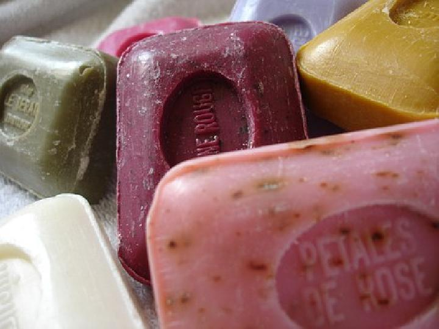
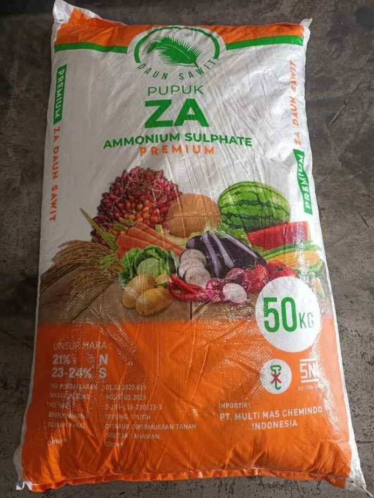
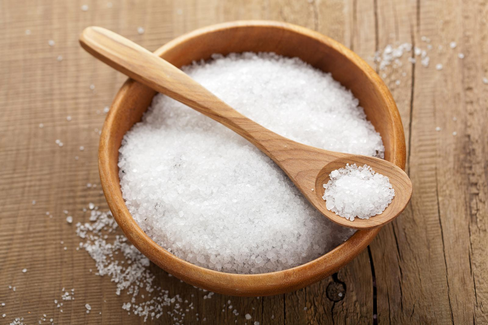

Stimulus
Misteri di Balik Air Sabun dan Pupuk
Pernahkah Anda bertanya mengapa sabun terasa licin saat dicampur air? Atau mengapa tanah bisa menjadi asam setelah dipupuk? Ternyata, garam yang tampak netral tidak selalu menghasilkan larutan netral.
Observasi Kehidupan Nyata
Perhatikan benda-benda ini. Apa yang terjadi jika kita melarutkannya dalam air?

Sabun Mandi
Natrium stearat (Garam basa kuat - asam lemah).
Basa

Pupuk ZA
Amonium sulfat (Garam basa lemah - asam kuat).
Asam

Garam Dapur
NaCl (Garam basa kuat - asam kuat).
Netral
Simulasi Mikroskopik: Reaksi Ion dalam Air
Klik tab untuk mengganti jenis garam, perhatikan ion mana yang bereaksi dengan air.
pH: 7
Sabun Mandi (Basa)
Reaksi:
A- + H2O ⇌ HA + OH-
Ion A- (Anion) dari sabun menarik H+ dari air, menghasilkan OH- yang membuat larutan bersifat basa (licin).